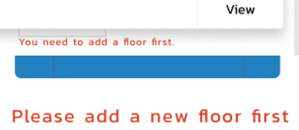
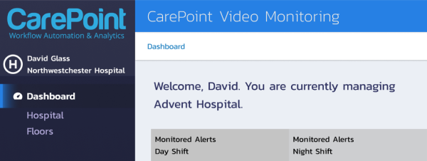
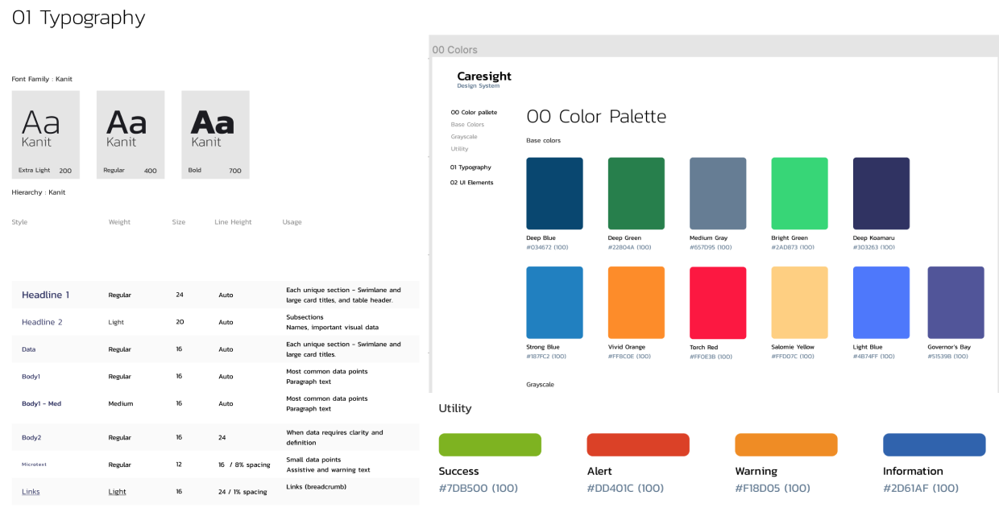
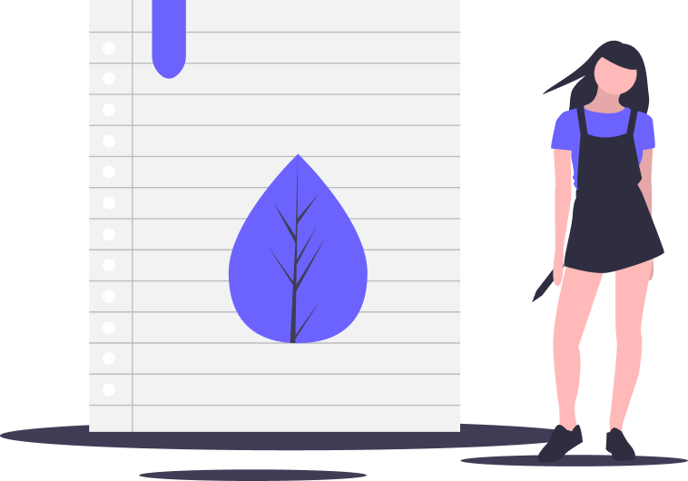
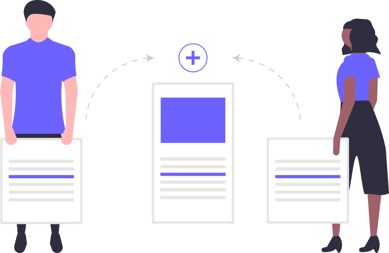

This project was personally important to me because it was an opportunity to help healthcare workers, who sacrifice their own mental and physical health for our well-being on a daily basis.
The tools they use to manage patient workflow are often complicated and frustrating. Caresight was a chance to remove some of the stress that healthcare workers encounter on the job by providing more intuitive and analytics-based tools that help them make smarter, more data-driven decisions.
Caresight also allowed me to grow through the coaching and mentoring of the junior designers on my team.
UX Lead, Mentor
User journey, Prototyping, Style Guide
Agency Owner, UX Intern, Visual Designer
Figma, Sketch, Zeplin
I was called in to work with the agency owner on a top client’s project.
The agency and client were at a crossroads with this project. It went through a few different rounds of iteration, but the project still suffered from persistent issues.
My role was to come in and help the agency refine the project while also presenting the work and establishing strong and positive communication with their client.
I was joining the project late in the process on a tight deadline, and needed to learn as much as I could about users from existing research.
I worked closely with the agency owner, leveraging their library of prior research on their user groups.
Screenshot of the agency’s last product with Caresight. We needed the new product to remain consistent with this one, while still delivering the best UX for the new product.
Caresight is an advanced reporting and analytics-as-a-service solution focused on reducing risk and improving caregiver/patient experiences.
Caresight has decades of experience in nursing management and clinical workflows, and the agency and Caresight have been working together for over 10 years.
Hospitals are extremely high-stress environments, and are becoming increasingly more data-driven. This particular project had three user types to design for.
Two of them, Nurses and Healthcare Administrators are split-attention users. Due to the nature of their job, they cannot dedicate all of their attention to the interface that they are using. Therefore, the majority of design decisions were made with them in mind.
The client requested one universal home screen that will work simultaneousely for the information each user would need (and are privy to) see.
NURSES
HIGH EMPATHY | HIGH STRESS | HANDS-ON
Nurses typically have a heightened sense of empathy and sensitivity to other’s needs.
On a day-to-day basis, they’re forced to make difficult and potentially life-altering decisions on-the-fly.
Recent reports (05/2019), show that nearly 30% of all nurses suffer from post-traumatic stress disorder (PTSD).
To help reduce their stress, our goal was to help them find the information they need fast, and provide some personal, conversational writing that would give them some sense of appreciation and caring from their superiors.
HEALTHCARE ADMINS
MANAGEMENT | LOCAL
Like Nurses, Healthcare Admins have reported that their sense of empathy is what started them in the field.
However, not working directly with patients, it’s easier for them to detach from a given situation and make the cool decisions that often need to be made.
Their duties include coordinating information between clinicians and facilities, patients, and other key personnel.
Admin work is detailed and difficult. It is not uncommon for admins to work long after their allotted shifts and hours, so it’s imperative that their tools are efficient and straightforward.
SYS ADMINS
CARESIGHT | BACKEND
Caresight offers a lot of customization to their customers.
Their Sys Admins need to be able to log in and read data from all user activity in order to address any issues that come up, as well as understand how to better the solution for their customer.
We wanted to solve this problem without resorting to error message and frustraing the user with re-directions. Here are some of the solutions we tried:
Ultimately, all of these paths were too long and not intuitive enough.
BEFORE - PROBLEM Four screens for adding or editing a floor and/or a room to the system AFTER - SOLUTION One, intuitive screen for editing and/or adding all floors and rooms We added helpful suggestions in each table and search fields so (our split-attention) users
wouldn’t have to think about what information they might want to input for future reference.
We also changed the tone of the microcopy throughout the product to be
encouraging and helpful. Instead of “Error: Add floor first”, we used an
easy-to-read, nuetral and polite “Please add a new floor first”. We wanted to provide some personalized text for healthcare users. The goal in
welcoming each user by name was to further ease their stress by reiterating that
they are in the right place at the right time, adding some more positivity to
their workday
Revised UI components for Carepoint The UI Design system we inherited had many things we didn’t need. A lot of the components
were copied and pasted from external templates and libraries that weren’t relevant to the
project. Working with and mentoring two junior designers, I helped get the design system in shape to
ship to the client. This project was under a tight deadline which forced me to prioritize the bigger
picture. Once that was addressed, we could come back and address the details
that could be adjusted later. I learned a lot about timing and how ongoing deliberation can affect the overall
build of a product on a short notice. I also learned a lot about project planning. Being brought into the project
relatively late can be a disadvantage, but that doesn’t mean that the outcome
will be less than stellar when we focus on prioritizing user needs and use our
resources and dedication towards that goal. I’ve managed remote teams before, but as UX Lead, this was the first time I was
asked to mentor other designers while guiding them through the project. This included creating user personas and flows with a junior UX designer and
visual designer in order to explain how we’re making user-centered design
decisions. My role was to guide the team to work together and provide them with the
confidence they needed, while making sure the project was up-to-par for the
client. This was an exercise in balance because while I wanted to trust these designers,
they were hourly employees. A big portion of my job was to provide guidance and
guardrails to protect both the agency owner and the clients needs. As with every project, I am truly grateful to have been given the opportunity to learn and
grow as a person and as a designer. I look forward to future collaboration with the team,
should I be needed again.(ux) writing)


Design System
>

CHANGES WE MADE

what i learned

leadership